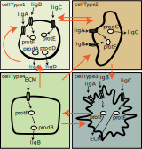
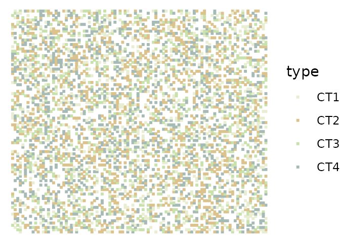
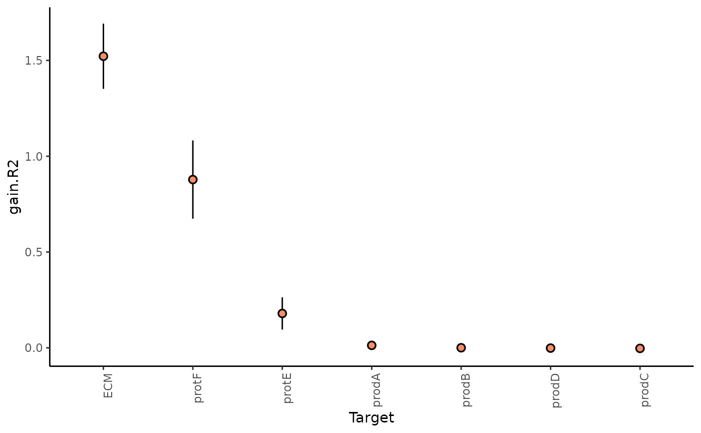
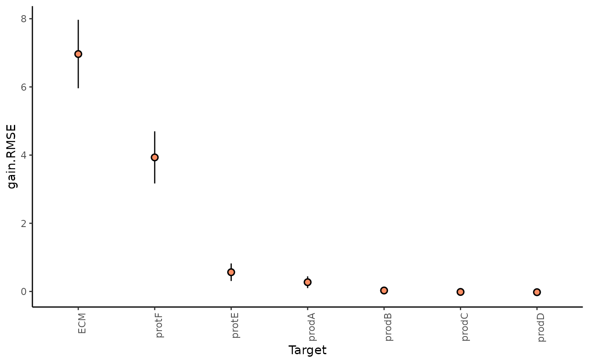
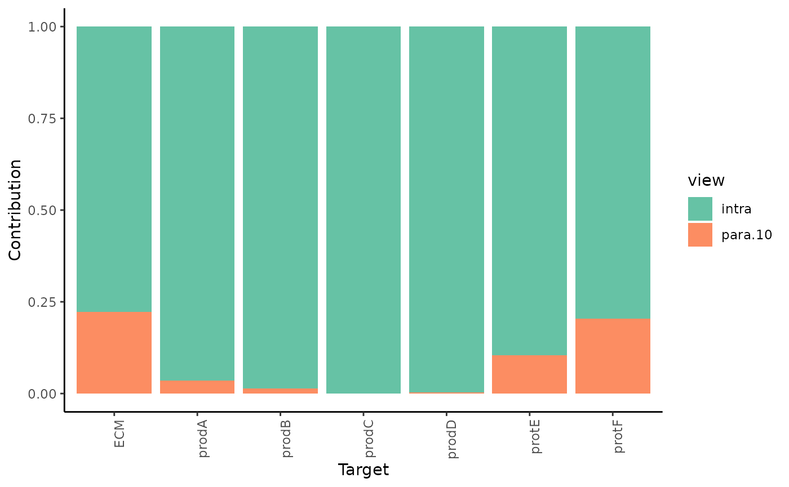
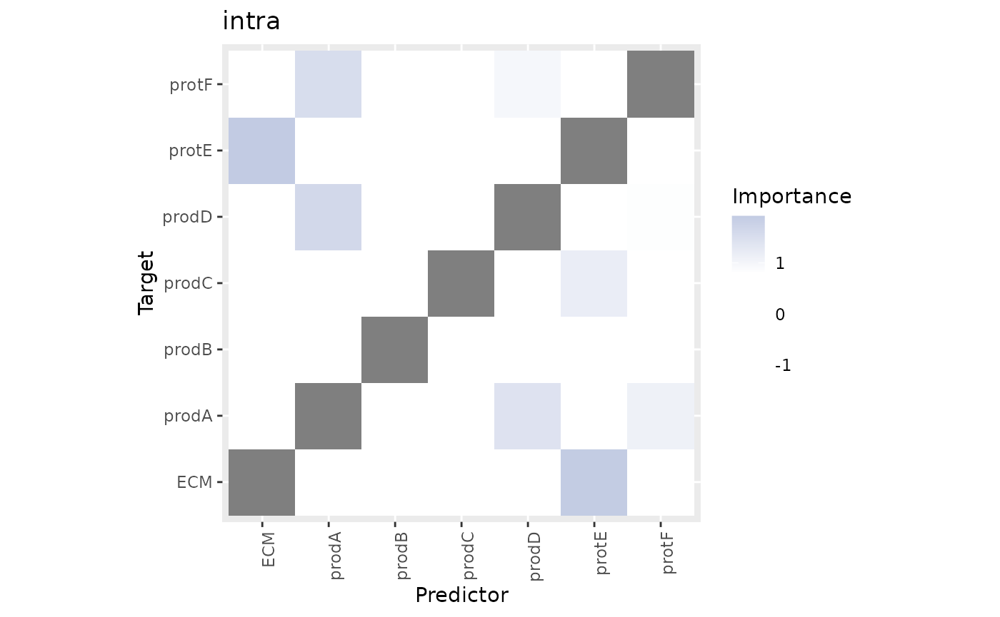
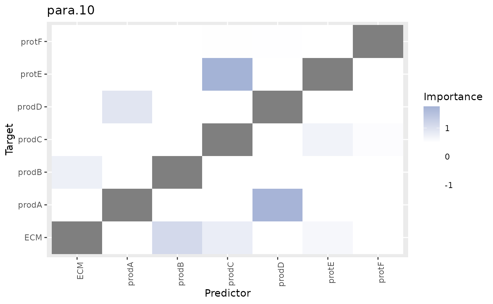
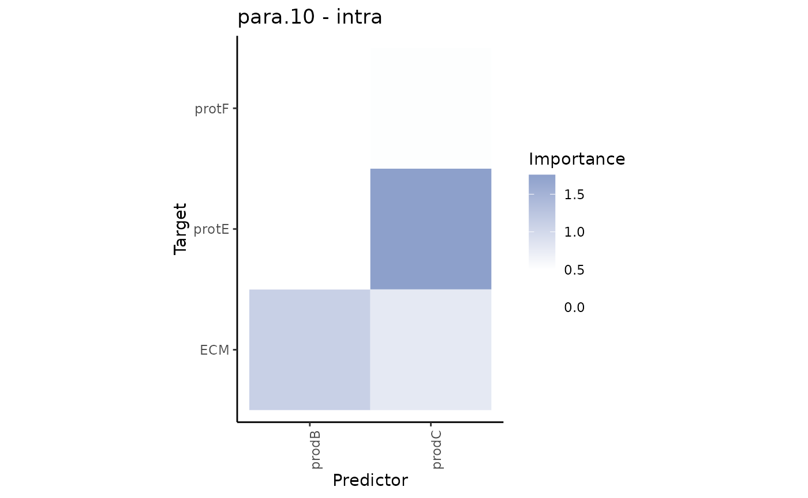
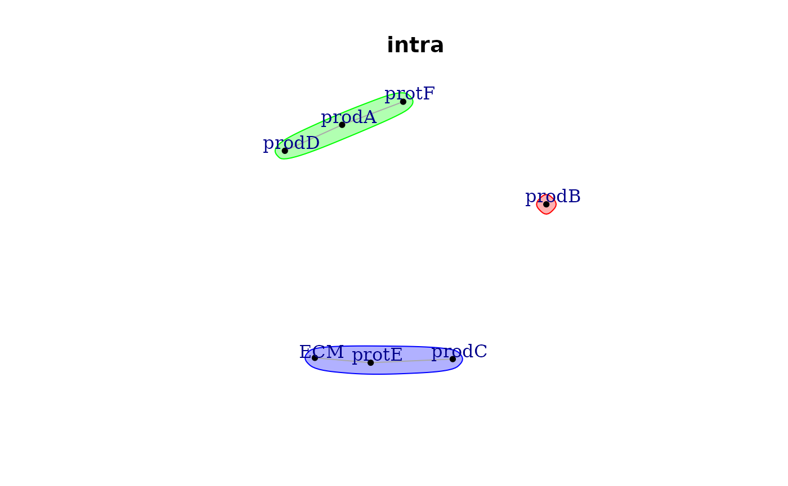
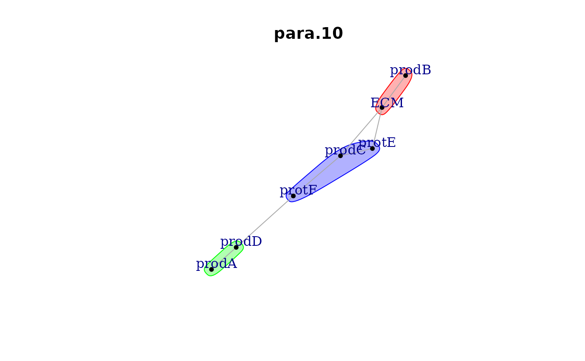

vignettes/mistyR.Rmd
mistyR.RmdThe use of mistyR is conceptualized around building a workflow for analysis of spatial omics data by four classes of functions:
To construct a workflow mistyR is designed with the use of pipe operators (for example the operator %>% from magrittr) for chaining functions in mind.
When loading mistyR please consider configuring a future::multisession() parallel execution plan. mistyR will then use all available cores for execution of computationally demanding functions. It is recommended that the user modifies the future::plan() according to their needs.
# MISTy
library(mistyR)
library(future)
# data manipulation
library(dplyr)
library(purrr)
library(distances)
# plotting
library(ggplot2)
plan(multisession)The following example uses the synthetically generated benchmark data synthetic that is included in the package. The dataset is a list of 10 tibbles, each representing data generated from a random layout of four cell types and empty space on a 100-by-100 grid.
The data was generated by simulating a two-dimensional cellular automata model that focuses on signaling events. The model simulates the production, diffusion, degradation and interactions of 11 molecular species. Note that the dataset contains simulated measurements only for the non-empty spaces.

data("synthetic")
ggplot(synthetic[[1]], aes(x = col, y = row, color = type)) +
geom_point(shape = 15, size = 0.7) +
scale_color_manual(values = c("#e9eed3", "#dcc38d", "#c9e2ad", "#a6bab6")) +
theme_void()
str(synthetic[[1]], give.attr = FALSE)
#> spec_tbl_df [4,205 × 14] (S3: spec_tbl_df/tbl_df/tbl/data.frame)
#> $ row : num [1:4205] 1 1 1 1 1 1 1 1 1 1 ...
#> $ col : num [1:4205] 100 11 13 14 15 20 23 24 26 32 ...
#> $ ECM : num [1:4205] 0.0385 0.0327 0.1444 0.387 0.1635 ...
#> $ ligA : num [1:4205] 0.834 0.119 0.525 0.269 0.195 ...
#> $ ligB : num [1:4205] 0.0157 0.0104 0.014 0.0367 0.1176 ...
#> $ ligC : num [1:4205] 0.236 0.804 0.334 0.502 0.232 ...
#> $ ligD : num [1:4205] 1.183 0.101 0.434 0.241 0.203 ...
#> $ protE: num [1:4205] 1.18 0 1.67 0 0 ...
#> $ protF: num [1:4205] 2.547 0.386 1.614 0.913 0.162 ...
#> $ prodA: num [1:4205] 0.382 0 0.472 0 0 ...
#> $ prodB: num [1:4205] 0 0 0 0 0.16 ...
#> $ prodC: num [1:4205] 0 0.536 0 0.418 0 ...
#> $ prodD: num [1:4205] 0.588 0 0.379 0 0 ...
#> $ type : chr [1:4205] "CT1" "CT2" "CT1" "CT2" ...For more information about the underlying model and data generation see help(synthetic) or the publication.
The mistyR workflow always starts by defining an intraview (create_initial_view()) containing measurements of the markers that are the target of the modeling at each cell of interest. For the first sample from the synthetic dataset we select all markers except for the ligands for all available cells.
expr <- synthetic[[1]] %>% select(-c(row, col, type, starts_with("lig")))
misty.intra <- create_initial_view(expr)
summary(misty.intra)
#> Length Class Mode
#> intraview 2 -none- list
#> misty.uniqueid 1 -none- character
summary(misty.intra$intraview)
#> Length Class Mode
#> abbrev 1 -none- character
#> data 7 spec_tbl_df listFrom the intrinsic view (intraview)1 mistyR will model the expression of each marker as a function of the expression of other markers within the cell. We are interested in exploring marker expressions coming from different spatial contexts that are complementary, i.e., that are distinguishable and contribute to the explanation of the overall expression of the markers.
mistyR includes two default helper functions for calculating and adding views that take into account the spatial context of the data: add_juxtaview() and add_paraview(). The juxtaview represent a local spatial view and captures the expression of all markers available in the intraview within the immediate neighborhood of each cell. The paraview captures the expression of all markers avainalbe in the intraview in the boarder tissue structure where the importance of the influence is proportional to the inverse of the distance between two cells. To add a paraview in the view composition, we first need information about the location of each cell from the intraview. Using this information we can create and add a paraview with importance radius of 10 to the view composition.
pos <- synthetic[[1]] %>% select(row, col)
misty.views <- misty.intra %>% add_paraview(pos, l = 10)
#>
#> Generating paraview
summary(misty.views)
#> Length Class Mode
#> intraview 2 -none- list
#> misty.uniqueid 1 -none- character
#> paraview.10 2 -none- listThe calculation of a juxtaview and a paraview can be computationally intensive when there are a large number of cells in the sample. Therefore the calculation is run in parallel with the set future::plan(). The computational time needed for the calculation of the paraview can also be significantly reduced by approximation. Refer to the documentation of this function (help(add_paraview)) for more details.
Other relevant and custom views can be created (create_view()) from an external resource (data.frame, tibble) and added to the view composition. The data should contain and one row per cell in order as in the intraview. For example we can create a view that captures the mean expression of the 10 nearest neighbors of each cell.
# find the 10 nearest neighbors
neighbors <- nearest_neighbor_search(distances(as.matrix(pos)), k = 11)[-1, ]
# calculate the mean expression of the nearest neighbors for all markers
# for each cell in expr
nnexpr <- seq_len(nrow(expr)) %>%
map_dfr(~ expr %>%
slice(neighbors[, .x]) %>%
colMeans())
nn.view <- create_view("nearest", nnexpr, "nn")
nn.view
#> $nearest
#> $nearest$abbrev
#> [1] "nn"
#>
#> $nearest$data
#> # A tibble: 4,205 × 7
#> ECM protE protF prodA prodB prodC prodD
#> <dbl> <dbl> <dbl> <dbl> <dbl> <dbl> <dbl>
#> 1 0.169 0.337 1.07 0.120 0.0138 0.146 0.165
#> 2 0.346 0.676 0.549 0.0969 0.0140 0.190 0.0766
#> 3 0.219 0.304 0.495 0.0496 0.0288 0.236 0.0387
#> 4 0.238 0.607 0.651 0.132 0.0288 0.0954 0.122
#> 5 0.313 0.688 0.835 0.166 0.0297 0.0837 0.173
#> 6 0.527 0.743 0.616 0.0722 0.0184 0.135 0.0964
#> 7 0.278 0.399 0.501 0.0413 0.0632 0.160 0.0604
#> 8 0.266 0.537 0.624 0.0738 0.0463 0.154 0.117
#> 9 0.356 0.564 0.565 0.0696 0.0415 0.208 0.106
#> 10 0.625 0.863 0.458 0.0350 0.0823 0.230 0.0576
#> # … with 4,195 more rowsThe created view(s) can be added (add_views()) to an existing view composition one by one or by providing them in a form of a list. Other examples of creating and adding custom views to the composition can be found in the resources in See also.
extended.views <- misty.views %>% add_views(nn.view)
summary(extended.views)
#> Length Class Mode
#> intraview 2 -none- list
#> misty.uniqueid 1 -none- character
#> paraview.10 2 -none- list
#> nearest 2 -none- listViews can also be removed from the composition by providing one or more names of views to remove_views(). The intraview and misty.uniqueid cannot be removed with this function.
extended.views %>%
remove_views("nearest") %>%
summary()
#> Length Class Mode
#> intraview 2 -none- list
#> misty.uniqueid 1 -none- character
#> paraview.10 2 -none- list
extended.views %>%
remove_views("intraview") %>%
summary()
#> Length Class Mode
#> intraview 2 -none- list
#> misty.uniqueid 1 -none- character
#> paraview.10 2 -none- list
#> nearest 2 -none- listOnce the view composition is created, the model training is managed by the function run_misty(). By default, models are trained for each marker available in the intraview for each view independently. The results of the model training will be stored in a folder named “results”.
misty.views %>% run_misty()
#>
#> Training models
#> [1] "/home/runner/work/mistyR/mistyR/vignettes/results"The workflow that we used for the first sample from the synthetic dataset can be easily extended to be applied to all 10 samples to completely reproduce one of the results reported in the publication. The results for each sample will be stored in a subfolder of the folder “results”.
result.folders <- synthetic %>% imap_chr(function(sample, name) {
sample.expr <- sample %>% select(-c(row, col, type, starts_with("lig")))
sample.pos <- sample %>% select(row, col)
create_initial_view(sample.expr) %>% add_paraview(sample.pos, l = 10) %>%
run_misty(results.folder = paste0("results", .Platform$file.sep, name))
})
#>
#> Generating paraview
#>
#> Training models
#>
#> Generating paraview
#>
#> Training models
#>
#> Generating paraview
#>
#> Training models
#>
#> Generating paraview
#>
#> Training models
#>
#> Generating paraview
#>
#> Training models
#>
#> Generating paraview
#>
#> Training models
#>
#> Generating paraview
#>
#> Training models
#>
#> Generating paraview
#>
#> Training models
#>
#> Generating paraview
#>
#> Training models
#>
#> Generating paraview
#>
#> Training models
result.folders
#> synthetic1
#> "/home/runner/work/mistyR/mistyR/vignettes/results/synthetic1"
#> synthetic10
#> "/home/runner/work/mistyR/mistyR/vignettes/results/synthetic10"
#> synthetic2
#> "/home/runner/work/mistyR/mistyR/vignettes/results/synthetic2"
#> synthetic3
#> "/home/runner/work/mistyR/mistyR/vignettes/results/synthetic3"
#> synthetic4
#> "/home/runner/work/mistyR/mistyR/vignettes/results/synthetic4"
#> synthetic5
#> "/home/runner/work/mistyR/mistyR/vignettes/results/synthetic5"
#> synthetic6
#> "/home/runner/work/mistyR/mistyR/vignettes/results/synthetic6"
#> synthetic7
#> "/home/runner/work/mistyR/mistyR/vignettes/results/synthetic7"
#> synthetic8
#> "/home/runner/work/mistyR/mistyR/vignettes/results/synthetic8"
#> synthetic9
#> "/home/runner/work/mistyR/mistyR/vignettes/results/synthetic9"Note that by default, mistyR caches calculated views2 and trained models, such that in case of repeated running of the workflow they will be retrieved instead of recalculated, thus saving significant computational time. However, the size of the generated cache files can be large. Therefore, the functions that can work with cached files, such as run_misty(), have parameter named cached that can be set to FALSE. Additionally the function clear_cache() provides means to remove cache files.
The raw mistyR results are stored in several text files in the output folder for each analyzed sample. The results from one or more samples can be collected, aggregated and coverted to an R object with the function collect_results(), by providing path(s) to folder(s) containing results generated by run_misty().
misty.results <- collect_results(result.folders)
#>
#> Collecting improvements
#>
#> Collecting contributions
#>
#> Collecting importances
#>
#> Aggregating
summary(misty.results)
#> Length Class Mode
#> improvements 4 tbl_df list
#> contributions 4 tbl_df list
#> importances 5 tbl_df list
#> improvements.stats 5 tbl_df list
#> contributions.stats 6 tbl_df list
#> importances.aggregated 5 tbl_df listSee help(collect_results) for more information on the structure of misty.results.
MISTy gives explanatory answers to three general questions. Each question can be answered by looking at the corresponding plot.
1. How much can the broader spatial context explain the expression of markers (in contrast to the intraview)?
This can be observed in the gain in R2 (absolute percentage) (or relative percentage of decrease RMSE) of using the multiview model in contrast to the single intraview only model.
misty.results %>%
plot_improvement_stats("gain.R2") %>%
plot_improvement_stats("gain.RMSE")
We can further inspect the significance of the gain in variance explained, by the assigned p-value of improvement based on cross-validation.
misty.results$improvements %>%
filter(measure == "p.R2") %>%
group_by(target) %>%
summarize(mean.p = mean(value)) %>%
arrange(mean.p)
#> # A tibble: 7 × 2
#> target mean.p
#> <chr> <dbl>
#> 1 ECM 0.0114
#> 2 protF 0.0829
#> 3 protE 0.421
#> 4 prodA 0.463
#> 5 prodB 0.500
#> 6 prodD 0.503
#> 7 prodC 0.505In general, the significant gain in R2 can be interpreted as the following:
“We can better explain the expression of marker X, when we consider additional views, other than the intrinsic view.”
2.How much do different view components contribute to explaining the expression?
misty.results %>% plot_view_contributions()
As expected most of the contribution to the prediction of the expression of the markers comes from the intraview. However for the markers that we observed significant improvement of variance we can also observe a proportional estimated contribution of the paraview.
3.What are the specific relations that can explain the contributions?
To explain the contributions, we can visualize the importances of markers coming from each view separately as predictors of the expression of all markers.
First, the intraview importances.
misty.results %>% plot_interaction_heatmap(view = "intra", cutoff = 0.8)
These importances are associated to the relationship between markers in the same cell. As we didn’t use the information about the cell types in any way during the process of modeling the significant interactions that we see in the heatmap may come from any of the cell types.
Second, the paraview importances.
misty.results %>% plot_interaction_heatmap(view = "para.10", cutoff = 0.5)
These importances are associated to the relationship between markers in the cell and markers in the broader structure (controlled by our parameter l).
We can observe that some interactions in the paraview might be redundant, i.e., they are also found to be important in the intraview. To focus on the interactions coming from the paraview only we can plot the contrast between these results.
misty.results %>% plot_contrast_heatmap("intra", "para.10", cutoff = 0.5)
Futhermore, since the predictor and target markers in both views are the same, we can plot the interaction communities that can be extracted from the estimated interaction pairs from the intraview
misty.results %>% plot_interaction_communities("intra")
and the paraview.
misty.results %>% plot_interaction_communities("para.10", cutoff = 0.5)
When interpreting the results and the plots it is important to note that the relationships captured in the importances are not to assumed or interpreted as linear or casual. Furthermore, the estimated importance of a single predictor - marker pair should not be interpredes in isolation but in the context of the other predictors, since training MISTy models is multivariate predictive task.
Here is the output of sessionInfo() at the point when this document was compiled:
#> R version 4.1.1 (2021-08-10)
#> Platform: x86_64-pc-linux-gnu (64-bit)
#> Running under: Ubuntu 20.04.3 LTS
#>
#> Matrix products: default
#> BLAS: /usr/lib/x86_64-linux-gnu/blas/libblas.so.3.9.0
#> LAPACK: /usr/lib/x86_64-linux-gnu/lapack/liblapack.so.3.9.0
#>
#> Random number generation:
#> RNG: L'Ecuyer-CMRG
#> Normal: Inversion
#> Sample: Rejection
#>
#> locale:
#> [1] LC_CTYPE=C.UTF-8 LC_NUMERIC=C LC_TIME=C.UTF-8
#> [4] LC_COLLATE=C.UTF-8 LC_MONETARY=C.UTF-8 LC_MESSAGES=C.UTF-8
#> [7] LC_PAPER=C.UTF-8 LC_NAME=C LC_ADDRESS=C
#> [10] LC_TELEPHONE=C LC_MEASUREMENT=C.UTF-8 LC_IDENTIFICATION=C
#>
#> attached base packages:
#> [1] stats graphics grDevices utils datasets methods base
#>
#> other attached packages:
#> [1] ggplot2_3.3.5 distances_0.1.8 purrr_0.3.4 dplyr_1.0.7
#> [5] future_1.22.1 mistyR_1.2.1 BiocStyle_2.22.0
#>
#> loaded via a namespace (and not attached):
#> [1] tidyr_1.1.4 listenv_0.8.0 assertthat_0.2.1
#> [4] rprojroot_2.0.2 digest_0.6.28 utf8_1.2.2
#> [7] parallelly_1.28.1 R6_2.5.1 evaluate_0.14
#> [10] highr_0.9 pillar_1.6.4 rlang_0.4.12
#> [13] data.table_1.14.2 furrr_0.2.3 jquerylib_0.1.4
#> [16] R.utils_2.11.0 R.oo_1.24.0 rmarkdown_2.11
#> [19] pkgdown_1.6.1 textshaping_0.3.6 desc_1.4.0
#> [22] labeling_0.4.2 stringr_1.4.0 igraph_1.2.7
#> [25] munsell_0.5.0 compiler_4.1.1 xfun_0.27
#> [28] pkgconfig_2.0.3 systemfonts_1.0.3 globals_0.14.0
#> [31] htmltools_0.5.2 tidyselect_1.1.1 tibble_3.1.5
#> [34] bookdown_0.24 codetools_0.2-18 fansi_0.5.0
#> [37] crayon_1.4.1 withr_2.4.2 R.methodsS3_1.8.1
#> [40] grid_4.1.1 jsonlite_1.7.2 gtable_0.3.0
#> [43] lifecycle_1.0.1 DBI_1.1.1 magrittr_2.0.1
#> [46] scales_1.1.1 rlist_0.4.6.2 cli_3.1.0
#> [49] stringi_1.7.5 cachem_1.0.6 farver_2.1.0
#> [52] fs_1.5.0 bslib_0.3.1 filelock_1.0.2
#> [55] ellipsis_0.3.2 ragg_1.1.3 generics_0.1.1
#> [58] vctrs_0.3.8 RColorBrewer_1.1-2 tools_4.1.1
#> [61] glue_1.4.2 parallel_4.1.1 fastmap_1.1.0
#> [64] yaml_2.2.1 colorspace_2.0-2 BiocManager_1.30.16
#> [67] memoise_2.0.0 knitr_1.36 sass_0.4.0You will notice that misty.intra contains an element named misty.uniqueid that is used for caching. If not provided, this id is automatically generated.↩︎
juxtaview and paraview calculated and added by add_juxtaview() and add_paraview() respectively↩︎